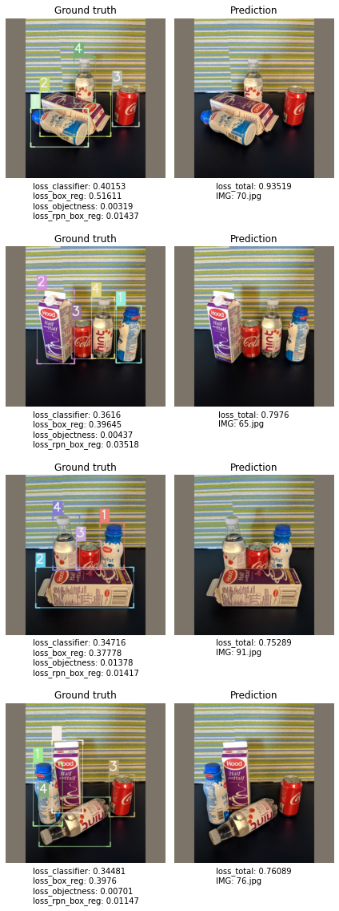
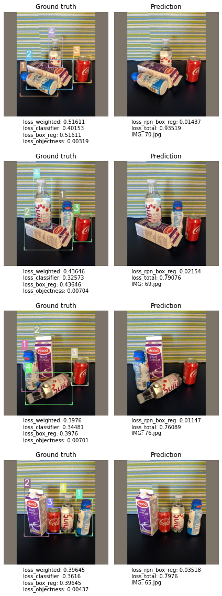

The purpose of this notebook is to showcase the newly added plot_top_losses functionality, which allows users to inspect models' results by plotting images sorted by various combinations of losses. This API makes it easy to immediately spot pictures the model struggles the most with, giving the practitioner the opportunity to take swift action to correct this behaviour (remove wrong samples, correct mis-labellings, etc).
plot_top_losses is available for all IceVision models, as the below notebook shows.
Install IceVision
!pip install git+git://github.com/airctic/icevision.git#egg=icevision[all] icedata --upgrade
Object Detection
Load fridge dataset
from icevision.all import *
# Loading Data
url = "https://cvbp-secondary.z19.web.core.windows.net/datasets/object_detection/odFridgeObjects.zip"
dest_dir = "fridge"
data_dir = icedata.load_data(url, dest_dir)
# Parser
class_map = ClassMap(["milk_bottle", "carton", "can", "water_bottle"])
parser = parsers.voc(annotations_dir=data_dir / "odFridgeObjects/annotations",
images_dir=data_dir / "odFridgeObjects/images",
class_map=class_map)
# Records
train_records, valid_records = parser.parse()
HBox(children=(HTML(value=''), FloatProgress(value=0.0, max=20380998.0), HTML(value='')))
HBox(children=(HTML(value=''), FloatProgress(value=0.0, max=128.0), HTML(value='')))
[1m[1mINFO [0m[1m[0m - [1m[34m[1mAutofixing records[0m[1m[34m[0m[1m[0m | [36micevision.parsers.parser[0m:[36mparse[0m:[36m126[0m
# Transforms
train_tfms = tfms.A.Adapter([*tfms.A.aug_tfms(size=384, presize=512), tfms.A.Normalize()])
valid_tfms = tfms.A.Adapter([*tfms.A.resize_and_pad(384), tfms.A.Normalize()])
# Datasets
train_ds = Dataset(train_records, train_tfms)
valid_ds = Dataset(valid_records, valid_tfms)
# DataLoaders
train_dl = faster_rcnn.train_dl(train_ds, batch_size=16, num_workers=4, shuffle=True)
valid_dl = faster_rcnn.valid_dl(valid_ds, batch_size=1, num_workers=4, shuffle=False)
Train faster_rcnn model
model = faster_rcnn.model(num_classes=len(class_map))
Downloading: "https://download.pytorch.org/models/fasterrcnn_resnet50_fpn_coco-258fb6c6.pth" to /root/.cache/torch/hub/checkpoints/fasterrcnn_resnet50_fpn_coco-258fb6c6.pth
HBox(children=(HTML(value=''), FloatProgress(value=0.0, max=167502836.0), HTML(value='')))
metrics = [COCOMetric(metric_type=COCOMetricType.bbox)]
learn = faster_rcnn.fastai.learner(dls=[train_dl, valid_dl], model=model, metrics=metrics)
learn.fine_tune(5, 1e-2, freeze_epochs=3)
| epoch | train_loss | valid_loss | COCOMetric | time |
|---|---|---|---|---|
| 0 | 0.929798 | 0.745340 | 0.110503 | 00:09 |
| 1 | 0.801614 | 0.534930 | 0.287367 | 00:06 |
| 2 | 0.683533 | 0.503273 | 0.254913 | 00:07 |
| epoch | train_loss | valid_loss | COCOMetric | time |
|---|---|---|---|---|
| 0 | 4.777527 | 0.727937 | 0.112012 | 00:11 |
| 1 | 2.675926 | 0.900404 | 0.087199 | 00:09 |
| 2 | 1.949393 | 0.676135 | 0.063974 | 00:09 |
| 3 | 1.550345 | 0.538352 | 0.075615 | 00:09 |
| 4 | 1.305145 | 0.539530 | 0.101115 | 00:09 |
Run top_plot_losses on faster_rcnn model results
Values allowed to pass to sort_by are (for faster_rcnn):
"loss_classifier""loss_box_reg""loss_objectness""loss_rpn_box_reg""loss_total"(sum of the previous 4 losses){"method": "weighted", "weights": {"loss_box_reg": 0.25, "loss_classifier": 0.25, "loss_objectness": 0.25, "loss_rpn_box_reg": 0.25,}}(calculates weighted sum of the 4 losses - Note: I have set weights to0.25for example purposes)
Below we show several ways of invoking the same API on the trained model, sorting samples by different losses combinations.
samples_plus_losses, preds, losses_stats = faster_rcnn.interp.plot_top_losses(model=model, dataset=valid_ds, sort_by="loss_total", n_samples=4)
[1m[1mINFO [0m[1m[0m - [1mLosses returned by model: ['loss_classifier', 'loss_box_reg', 'loss_objectness', 'loss_rpn_box_reg'][0m | [36micevision.models.interpretation[0m:[36mplot_top_losses[0m:[36m206[0m
HBox(children=(HTML(value=''), FloatProgress(value=0.0, max=26.0), HTML(value='')))
HBox(children=(HTML(value=''), FloatProgress(value=0.0, max=4.0), HTML(value='')))

samples_plus_losses, preds, losses_stats = faster_rcnn.interp.plot_top_losses(model=model, dataset=valid_ds, sort_by="loss_classifier", n_samples=4)
[1m[1mINFO [0m[1m[0m - [1mLosses returned by model: ['loss_classifier', 'loss_box_reg', 'loss_objectness', 'loss_rpn_box_reg'][0m | [36micevision.models.interpretation[0m:[36mplot_top_losses[0m:[36m206[0m
HBox(children=(HTML(value=''), FloatProgress(value=0.0, max=26.0), HTML(value='')))
HBox(children=(HTML(value=''), FloatProgress(value=0.0, max=4.0), HTML(value='')))

# in this case `loss_weighted` will be equal to `loss_box_reg`
by = {
"method": "weighted",
"weights": {
"loss_box_reg": 1,
"loss_classifier": 0,
"loss_objectness": 0,
"loss_rpn_box_reg": 0,
},
}
samples_plus_losses, preds, losses_stats = faster_rcnn.interp.plot_top_losses(model=model, dataset=valid_ds, sort_by=by, n_samples=4)
[1m[1mINFO [0m[1m[0m - [1mLosses returned by model: ['loss_classifier', 'loss_box_reg', 'loss_objectness', 'loss_rpn_box_reg'][0m | [36micevision.models.interpretation[0m:[36mplot_top_losses[0m:[36m206[0m
HBox(children=(HTML(value=''), FloatProgress(value=0.0, max=26.0), HTML(value='')))
HBox(children=(HTML(value=''), FloatProgress(value=0.0, max=4.0), HTML(value='')))

by = {
"method": "weighted",
"weights": {
"loss_box_reg": 0.25,
"loss_classifier": 0.25,
"loss_objectness": 0.25,
"loss_rpn_box_reg": 0.25,
},
}
samples_plus_losses, preds, losses_stats = faster_rcnn.interp.plot_top_losses(model=model, dataset=valid_ds, sort_by=by, n_samples=4)
[1m[1mINFO [0m[1m[0m - [1mLosses returned by model: ['loss_classifier', 'loss_box_reg', 'loss_objectness', 'loss_rpn_box_reg'][0m | [36micevision.models.interpretation[0m:[36mplot_top_losses[0m:[36m206[0m
HBox(children=(HTML(value=''), FloatProgress(value=0.0, max=26.0), HTML(value='')))
HBox(children=(HTML(value=''), FloatProgress(value=0.0, max=4.0), HTML(value='')))

# `losses_stats` contains useful statistics for each computed loss in the dataset
losses_stats
# we can easily extract losses per image and display them in a pandas DataFrame for further analysis
import pandas as pd
loss_per_image = get_samples_losses(samples_plus_losses)
pd.DataFrame(loss_per_image)
{'loss_box_reg': {'1ile': 0.05190576612949371,
'25ile': 0.2035452425479889,
'50ile': 0.2641611248254776,
'75ile': 0.3478182256221771,
'99ile': 0.5161057710647583,
'max': 0.5161057710647583,
'mean': 0.2718363240934335,
'min': 0.05190576612949371},
'loss_classifier': {'1ile': 0.0807231068611145,
'25ile': 0.1814981997013092,
'50ile': 0.25537528097629547,
'75ile': 0.32677075266838074,
'99ile': 0.4015304148197174,
'max': 0.4015304148197174,
'mean': 0.24639798099031815,
'min': 0.0807231068611145},
'loss_objectness': {'1ile': 5.380709990276955e-05,
'25ile': 0.0020654327236115932,
'50ile': 0.006522084586322308,
'75ile': 0.010207928717136383,
'99ile': 0.030636457726359367,
'max': 0.030636457726359367,
'mean': 0.007866157029499075,
'min': 5.380709990276955e-05},
'loss_rpn_box_reg': {'1ile': 0.0014084185240790248,
'25ile': 0.008392253890633583,
'50ile': 0.014501482248306274,
'75ile': 0.017447534948587418,
'99ile': 0.03517897427082062,
'max': 0.03517897427082062,
'mean': 0.013996926015422035,
'min': 0.0014084185240790248},
'loss_total': {'1ile': 0.13555445312522352,
'25ile': 0.4158565173856914,
'50ile': 0.5547791894059628,
'75ile': 0.7083070203661919,
'99ile': 0.9351915549486876,
'max': 0.9351915549486876,
'mean': 0.5400973881286728,
'min': 0.13555445312522352}}
| filepath | loss_classifier | loss_box_reg | loss_objectness | loss_rpn_box_reg | loss_total | loss_weighted | |
|---|---|---|---|---|---|---|---|
| 0 | /root/.icevision/data/fridge/odFridgeObjects/images/70.jpg | 0.401530 | 0.516106 | 0.003187 | 0.014368 | 0.935192 | 0.233798 |
| 1 | /root/.icevision/data/fridge/odFridgeObjects/images/65.jpg | 0.361605 | 0.396446 | 0.004368 | 0.035179 | 0.797597 | 0.199399 |
| 2 | /root/.icevision/data/fridge/odFridgeObjects/images/69.jpg | 0.325730 | 0.436458 | 0.007038 | 0.021536 | 0.790761 | 0.197690 |
| 3 | /root/.icevision/data/fridge/odFridgeObjects/images/82.jpg | 0.336966 | 0.380997 | 0.030636 | 0.014635 | 0.763234 | 0.190809 |
| 4 | /root/.icevision/data/fridge/odFridgeObjects/images/76.jpg | 0.344810 | 0.397597 | 0.007009 | 0.011474 | 0.760891 | 0.190223 |
| 5 | /root/.icevision/data/fridge/odFridgeObjects/images/91.jpg | 0.347157 | 0.377784 | 0.013784 | 0.014169 | 0.752894 | 0.188223 |
| 6 | /root/.icevision/data/fridge/odFridgeObjects/images/73.jpg | 0.334780 | 0.347818 | 0.008493 | 0.017216 | 0.708307 | 0.177077 |
| 7 | /root/.icevision/data/fridge/odFridgeObjects/images/63.jpg | 0.326771 | 0.343447 | 0.003026 | 0.020271 | 0.693515 | 0.173379 |
| 8 | /root/.icevision/data/fridge/odFridgeObjects/images/125.jpg | 0.284659 | 0.318850 | 0.008986 | 0.012640 | 0.625135 | 0.156284 |
| 9 | /root/.icevision/data/fridge/odFridgeObjects/images/51.jpg | 0.253484 | 0.333823 | 0.006035 | 0.008696 | 0.602038 | 0.150509 |
| 10 | /root/.icevision/data/fridge/odFridgeObjects/images/66.jpg | 0.282760 | 0.277893 | 0.008295 | 0.024600 | 0.593548 | 0.148387 |
| 11 | /root/.icevision/data/fridge/odFridgeObjects/images/42.jpg | 0.257737 | 0.299093 | 0.016960 | 0.017189 | 0.590978 | 0.147745 |
| 12 | /root/.icevision/data/fridge/odFridgeObjects/images/59.jpg | 0.257267 | 0.262500 | 0.021031 | 0.022185 | 0.562983 | 0.140746 |
| 13 | /root/.icevision/data/fridge/odFridgeObjects/images/90.jpg | 0.260042 | 0.265823 | 0.004306 | 0.016405 | 0.546575 | 0.136644 |
| 14 | /root/.icevision/data/fridge/odFridgeObjects/images/109.jpg | 0.248338 | 0.260444 | 0.018180 | 0.017427 | 0.544389 | 0.136097 |
| 15 | /root/.icevision/data/fridge/odFridgeObjects/images/16.jpg | 0.221121 | 0.255459 | 0.002065 | 0.005470 | 0.484115 | 0.121029 |
| 16 | /root/.icevision/data/fridge/odFridgeObjects/images/28.jpg | 0.228037 | 0.208443 | 0.013820 | 0.018261 | 0.468562 | 0.117141 |
| 17 | /root/.icevision/data/fridge/odFridgeObjects/images/80.jpg | 0.218763 | 0.217823 | 0.007633 | 0.017448 | 0.461667 | 0.115417 |
| 18 | /root/.icevision/data/fridge/odFridgeObjects/images/33.jpg | 0.211880 | 0.199396 | 0.010208 | 0.016371 | 0.437855 | 0.109464 |
| 19 | /root/.icevision/data/fridge/odFridgeObjects/images/123.jpg | 0.181498 | 0.219479 | 0.001994 | 0.012886 | 0.415857 | 0.103964 |
| 20 | /root/.icevision/data/fridge/odFridgeObjects/images/100.jpg | 0.121183 | 0.203545 | 0.000172 | 0.001678 | 0.326578 | 0.081645 |
| 21 | /root/.icevision/data/fridge/odFridgeObjects/images/102.jpg | 0.141722 | 0.161956 | 0.000054 | 0.002683 | 0.306415 | 0.076604 |
| 22 | /root/.icevision/data/fridge/odFridgeObjects/images/19.jpg | 0.129916 | 0.137039 | 0.000416 | 0.007992 | 0.275363 | 0.068841 |
| 23 | /root/.icevision/data/fridge/odFridgeObjects/images/3.jpg | 0.134473 | 0.104869 | 0.005156 | 0.008392 | 0.252891 | 0.063223 |
| 24 | /root/.icevision/data/fridge/odFridgeObjects/images/4.jpg | 0.113395 | 0.092752 | 0.000150 | 0.003340 | 0.209638 | 0.052409 |
| 25 | /root/.icevision/data/fridge/odFridgeObjects/images/1.jpg | 0.080723 | 0.051906 | 0.001517 | 0.001408 | 0.135554 | 0.033889 |
Run top_plot_losses on a retinanet pretrained (but not finetuned) model
model = retinanet.model(num_classes=len(class_map))
Downloading: "https://download.pytorch.org/models/retinanet_resnet50_fpn_coco-eeacb38b.pth" to /root/.cache/torch/hub/checkpoints/retinanet_resnet50_fpn_coco-eeacb38b.pth
HBox(children=(HTML(value=''), FloatProgress(value=0.0, max=136595076.0), HTML(value='')))
by = {"method": "weighted",
"weights": {"loss_classification": 0.25,
"loss_bbox_regression": 0.75,
}
}
sorted_samples, sorted_preds, losses_stats = retinanet.interp.plot_top_losses(model, valid_ds, sort_by=by, n_samples=4)
[1m[1mINFO [0m[1m[0m - [1mLosses returned by model: ['loss_classification', 'loss_bbox_regression'][0m | [36micevision.models.interpretation[0m:[36mplot_top_losses[0m:[36m206[0m
HBox(children=(HTML(value=''), FloatProgress(value=0.0, max=26.0), HTML(value='')))
/usr/local/lib/python3.6/dist-packages/torch/nn/_reduction.py:44: UserWarning: size_average and reduce args will be deprecated, please use reduction='sum' instead.
warnings.warn(warning.format(ret))
HBox(children=(HTML(value=''), FloatProgress(value=0.0, max=4.0), HTML(value='')))

Run top_plot_losses on a efficientdet pretrained (but not finetuned) model
model = efficientdet.model(model_name='tf_efficientdet_lite0', num_classes=len(class_map), img_size=384)
sorted_samples, sorted_preds, losses_stats = efficientdet.interp.plot_top_losses(model, valid_ds, sort_by="class_loss", n_samples=4)
Downloading: "https://github.com/rwightman/efficientdet-pytorch/releases/download/v0.1/tf_efficientdet_lite0-f5f303a9.pth" to /root/.cache/torch/hub/checkpoints/tf_efficientdet_lite0-f5f303a9.pth
[1m[1mINFO [0m[1m[0m - [1mLosses returned by model: ['effdet_total_loss', 'class_loss', 'box_loss'][0m | [36micevision.models.interpretation[0m:[36mplot_top_losses[0m:[36m206[0m
HBox(children=(HTML(value=''), FloatProgress(value=0.0, max=26.0), HTML(value='')))
HBox(children=(HTML(value=''), FloatProgress(value=0.0, max=4.0), HTML(value='')))

Instance Segmentation
plot_top_losses in action with a mask_rcnn model on the pennfudan dataset
data_dir = icedata.pennfudan.load_data()
class_map = icedata.pennfudan.class_map()
HBox(children=(HTML(value=''), FloatProgress(value=0.0, max=53723336.0), HTML(value='')))
parser = icedata.pennfudan.parser(data_dir)
train_records, valid_records = parser.parse()
shift_scale_rotate = tfms.A.ShiftScaleRotate(rotate_limit=10)
crop_fn = partial(tfms.A.RandomSizedCrop, min_max_height=(384//2, 384), p=.5)
valid_tfms = tfms.A.Adapter([*tfms.A.resize_and_pad(size=348), tfms.A.Normalize()])
train_tfms = tfms.A.Adapter(
[
*tfms.A.aug_tfms(size=384, presize=512, shift_scale_rotate=shift_scale_rotate, crop_fn=crop_fn),
tfms.A.Normalize(),
]
)
train_ds = Dataset(train_records, train_tfms)
valid_ds = Dataset(valid_records, valid_tfms)
train_dl = mask_rcnn.train_dl(train_ds, batch_size=1, shuffle=True, num_workers=0)
valid_dl = mask_rcnn.valid_dl(valid_ds, batch_size=1, shuffle=False, num_workers=0)
HBox(children=(HTML(value=''), FloatProgress(value=0.0, max=170.0), HTML(value='')))
[1m[1mINFO [0m[1m[0m - [1m[34m[1mAutofixing records[0m[1m[34m[0m[1m[0m | [36micevision.parsers.parser[0m:[36mparse[0m:[36m126[0m
model = mask_rcnn.model(num_classes=len(class_map))
learn = mask_rcnn.fastai.learner(dls=[train_dl, valid_dl], model=model)
learn.fine_tune(10, 5e-4, freeze_epochs=2)
Downloading: "https://download.pytorch.org/models/maskrcnn_resnet50_fpn_coco-bf2d0c1e.pth" to /root/.cache/torch/hub/checkpoints/maskrcnn_resnet50_fpn_coco-bf2d0c1e.pth
HBox(children=(HTML(value=''), FloatProgress(value=0.0, max=178090079.0), HTML(value='')))
| epoch | train_loss | valid_loss | time |
|---|---|---|---|
| 0 | 0.702523 | 0.555716 | 00:18 |
| 1 | 0.657636 | 0.522894 | 00:14 |
| epoch | train_loss | valid_loss | time |
|---|---|---|---|
| 0 | 0.551434 | 0.377621 | 00:20 |
| 1 | 0.469830 | 0.448473 | 00:19 |
| 2 | 0.472173 | 0.364438 | 00:19 |
| 3 | 0.437653 | 0.338397 | 00:19 |
| 4 | 0.375957 | 0.342569 | 00:19 |
| 5 | 0.385508 | 0.317213 | 00:20 |
| 6 | 0.371840 | 0.343802 | 00:19 |
| 7 | 0.356101 | 0.358258 | 00:19 |
| 8 | 0.484352 | 0.322044 | 00:19 |
| 9 | 0.339008 | 0.312049 | 00:19 |
sorted_samples, sorted_preds, losses_stats = mask_rcnn.interp.plot_top_losses(model, valid_ds, sort_by="loss_mask")
[1m[1mINFO [0m[1m[0m - [1mLosses returned by model: ['loss_classifier', 'loss_box_reg', 'loss_objectness', 'loss_rpn_box_reg', 'loss_mask'][0m | [36micevision.models.interpretation[0m:[36mplot_top_losses[0m:[36m206[0m
HBox(children=(HTML(value=''), FloatProgress(value=0.0, max=34.0), HTML(value='')))
HBox(children=(HTML(value=''), FloatProgress(value=0.0, max=5.0), HTML(value='')))

Keypoint Detection
plot_top_losses in action with a keypoint_rcnn model on the biwi dataset
data_dir = icedata.biwi.load_data()
parser = icedata.biwi.parser(data_dir)
train_records, valid_records = parser.parse()
presize = 240
size = 120
valid_tfms = tfms.A.Adapter([*tfms.A.resize_and_pad(size), tfms.A.Normalize()])
train_tfms = tfms.A.Adapter([*tfms.A.aug_tfms(size=size, presize=presize, crop_fn=None), tfms.A.Normalize()])
train_ds = Dataset(train_records, train_tfms)
valid_ds = Dataset(valid_records, valid_tfms)
train_dl = keypoint_rcnn.train_dl(train_ds, batch_size=32, num_workers=4, shuffle=True)
valid_dl = keypoint_rcnn.valid_dl(train_ds, batch_size=32, num_workers=4, shuffle=False)
HBox(children=(HTML(value=''), FloatProgress(value=0.0, max=593774.0), HTML(value='')))
HBox(children=(HTML(value=''), FloatProgress(value=0.0, max=200.0), HTML(value='')))
[1m[1mINFO [0m[1m[0m - [1m[34m[1mAutofixing records[0m[1m[34m[0m[1m[0m | [36micevision.parsers.parser[0m:[36mparse[0m:[36m126[0m
backbone = backbones.resnet_fpn.resnet18(pretrained=True)
model = keypoint_rcnn.model(backbone=backbone, num_keypoints=1)
Downloading: "https://download.pytorch.org/models/resnet18-5c106cde.pth" to /root/.cache/torch/hub/checkpoints/resnet18-5c106cde.pth
HBox(children=(HTML(value=''), FloatProgress(value=0.0, max=46827520.0), HTML(value='')))
learn = keypoint_rcnn.fastai.learner(dls=[train_dl, valid_dl], model=model)
learn.fine_tune(5, 1e-4, freeze_epochs=2)
| epoch | train_loss | valid_loss | time |
|---|---|---|---|
| 0 | 9.269516 | 8.537302 | 00:35 |
| 1 | 8.527759 | 7.503790 | 00:16 |
| epoch | train_loss | valid_loss | time |
|---|---|---|---|
| 0 | 7.033783 | 6.651293 | 00:22 |
| 1 | 6.630652 | 5.782725 | 00:24 |
| 2 | 6.220629 | 5.254831 | 00:15 |
| 3 | 5.921734 | 5.051409 | 00:19 |
| 4 | 5.713860 | 4.953146 | 00:17 |
sorted_samples, sorted_preds, losses_stats = keypoint_rcnn.interp.plot_top_losses(model, valid_ds, sort_by="loss_keypoint")
[1m[1mINFO [0m[1m[0m - [1mLosses returned by model: ['loss_classifier', 'loss_box_reg', 'loss_objectness', 'loss_rpn_box_reg', 'loss_keypoint'][0m | [36micevision.models.interpretation[0m:[36mplot_top_losses[0m:[36m206[0m
HBox(children=(HTML(value=''), FloatProgress(value=0.0, max=40.0), HTML(value='')))
HBox(children=(HTML(value=''), FloatProgress(value=0.0, max=5.0), HTML(value='')))

mmdet models integration
fcos weighted loss example
data_dir = icedata.fridge.load_data()
parser = icedata.fridge.parser(data_dir)
train_records, valid_records = parser.parse()
model_type = models.mmdet.fcos
presize, size = 256, 224
train_tfms = tfms.A.Adapter([*tfms.A.aug_tfms(presize=presize, size=size), tfms.A.Normalize()])
valid_tfms = tfms.A.Adapter([*tfms.A.resize_and_pad(size=size), tfms.A.Normalize()])
train_ds = Dataset(train_records[:10], train_tfms)
valid_ds = Dataset(valid_records[:10], valid_tfms)
train_dl = model_type.train_dl(train_ds, batch_size=1, num_workers=0, shuffle=True)
valid_dl = model_type.valid_dl(valid_ds, batch_size=1, num_workers=0, shuffle=False)
len(train_ds), len(train_dl)
config_path = "~/mmdetection/configs/fcos/fcos_center_r50_caffe_fpn_gn-head_1x_coco.py"
weights_path = None
model = model_type.model(config_path, num_classes=len(parser.class_map), weights_path=weights_path)
100%|██████████| 128/128 [00:00<00:00, 970.67it/s]
[1m[1mINFO [0m[1m[0m - [1m[34m[1mAutofixing records[0m[1m[34m[0m[1m[0m | [36micevision.parsers.parser[0m:[36mparse[0m:[36m132[0m
(10, 10)
2021-02-16 22:56:47,939 - mmdet - INFO - load model from: open-mmlab://detectron/resnet50_caffe
2021-02-16 22:56:48,046 - mmdet - WARNING - The model and loaded state dict do not match exactly
unexpected key in source state_dict: conv1.bias, layer1.0.conv1.bias, layer1.0.conv2.bias, layer1.0.conv3.bias, layer1.0.downsample.0.bias, layer1.1.conv1.bias, layer1.1.conv2.bias, layer1.1.conv3.bias, layer1.2.conv1.bias, layer1.2.conv2.bias, layer1.2.conv3.bias, layer2.0.conv1.bias, layer2.0.conv2.bias, layer2.0.conv3.bias, layer2.0.downsample.0.bias, layer2.1.conv1.bias, layer2.1.conv2.bias, layer2.1.conv3.bias, layer2.2.conv1.bias, layer2.2.conv2.bias, layer2.2.conv3.bias, layer2.3.conv1.bias, layer2.3.conv2.bias, layer2.3.conv3.bias, layer3.0.conv1.bias, layer3.0.conv2.bias, layer3.0.conv3.bias, layer3.0.downsample.0.bias, layer3.1.conv1.bias, layer3.1.conv2.bias, layer3.1.conv3.bias, layer3.2.conv1.bias, layer3.2.conv2.bias, layer3.2.conv3.bias, layer3.3.conv1.bias, layer3.3.conv2.bias, layer3.3.conv3.bias, layer3.4.conv1.bias, layer3.4.conv2.bias, layer3.4.conv3.bias, layer3.5.conv1.bias, layer3.5.conv2.bias, layer3.5.conv3.bias, layer4.0.conv1.bias, layer4.0.conv2.bias, layer4.0.conv3.bias, layer4.0.downsample.0.bias, layer4.1.conv1.bias, layer4.1.conv2.bias, layer4.1.conv3.bias, layer4.2.conv1.bias, layer4.2.conv2.bias, layer4.2.conv3.bias
by = {
"method": "weighted",
"weights": {
"loss_cls": 0,
"loss_bbox": 0,
"loss_centerness": 1,
},
}
sorted_samples, sorted_preds, losses_stats = model_type.interp.plot_top_losses(model, valid_ds, sort_by=by)
[1m[1mINFO [0m[1m[0m - [1mLosses returned by model: ['loss_centerness', 'loss_cls', 'loss_bbox'][0m | [36micevision.models.interpretation[0m:[36mplot_top_losses[0m:[36m211[0m
100%|██████████| 10/10 [00:03<00:00, 2.75it/s]
100%|██████████| 2/2 [00:02<00:00, 1.43s/it]